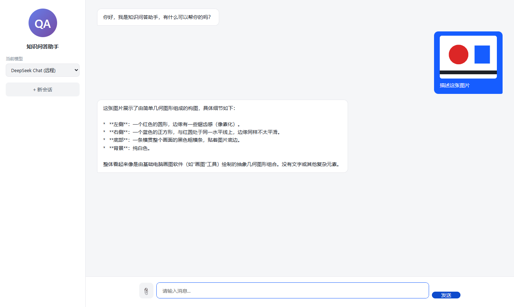
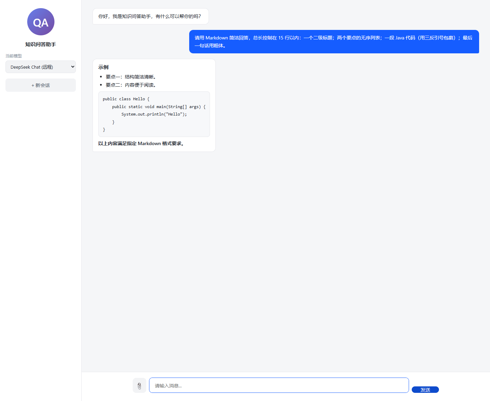
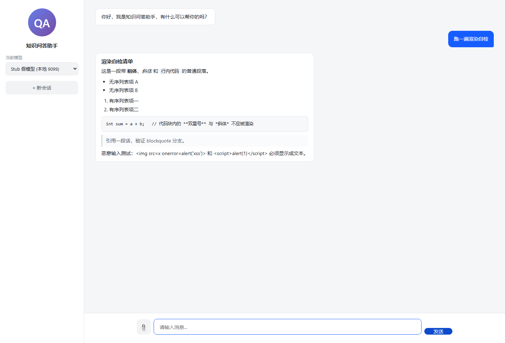

同样是给项目新加的功能。它解决的问题非常具体：模型返回的是 Markdown，但前端一直用
textContent原样塞进去，于是**粗体**、* 列表、三反引号代码块全都以符号形态显示。证据来自 2026-11-09 的真实复现，文件在
docs/evidence-复现/Markdown渲染/。
改造前的机器人气泡（这张截图取自旧版本，就是本文档要修掉的毛病）：

能看到三处典型问题：
* **左侧**：一个红色的圆形… —— 星号和双星号直接露出来；* 与正文挤在一起，没有缩进层级；根因一行代码就够定位（index.html 改造前）：
if (text) div.appendChild(document.createTextNode(text)); // 全部当纯文本
| 方案 | 体积 | 依赖 | 可控性 | 取舍 |
|---|---|---|---|---|
| marked.js / markdown-it | 30~100 KB | 新增 CDN 或 vendored 文件 | 默认不转义，需配合 DOMPurify 才安全 | 对本项目过重 |
| 自己写白名单渲染器 | ~60 行 | 0 | 每一行都能讲清楚、能审计 | ✅ 采用 |
关键判断：模型输出必须当作不可信输入。它可能被用户用 prompt 注入成 <img onerror=...>。
所以这里的核心不是"把 Markdown 渲染得多全"，而是"先把所有 HTML 转义，再只对白名单语法做替换"。
只支持 6 种语法（够覆盖模型实际输出的 95%）：标题、无序/有序列表、围栏代码块、行内代码、粗体/斜体、引用。
| 项 | 真实回复路线（A） | 桩路线（B，验证 XSS） |
|---|---|---|
| 应用 | 8083 实例（改造后的代码） | 8084 实例 + 桩配置 |
| 模型 | 需要可用 API Key（.env 里的 DEEPSEEK_API_KEY） |
不需要，桩服务固定返回 |
| Node.js | 可选（仅截图脚本） | 需要（跑桩服务） |
| PostgreSQL / Ollama | 不需要 | 不需要 |
| 浏览器 | Chrome / Edge | 同左 |
A 路线花 1 次模型调用（约 5~10 秒），B 路线零成本、结果完全确定。
src/main/resources/static/index.html）.message.error 规则之后）/* ===== 新增功能②：Markdown 渲染样式（只作用于 bot 气泡） ===== */
.message.bot { white-space: normal; } /* 关掉父级 pre-wrap，改由块级元素控制间距 */
.message.bot .md-p { margin: 0 0 8px; }
.message.bot .md-p:last-child { margin-bottom: 0; }
.message.bot .md-h { margin: 10px 0 6px; font-size: 15px; font-weight: 600; line-height: 1.5; }
.message.bot .md-h:first-child { margin-top: 0; }
.message.bot .md-ul, .message.bot .md-ol { margin: 6px 0 8px; padding-left: 22px; }
.message.bot .md-ul li, .message.bot .md-ol li { margin: 2px 0; }
.message.bot .md-quote {
margin: 8px 0; padding: 6px 10px; color: #4e5969;
border-left: 3px solid #d9d9d9; background: #fafbfc;
}
.message.bot .md-code {
margin: 8px 0; padding: 10px 12px; background: #f7f8fa;
border: 1px solid #e5e6eb; border-radius: 8px;
overflow-x: auto; white-space: pre; /* 代码块自己保留换行 */
}
.message.bot .md-code code {
font-family: ui-monospace, Consolas, "Courier New", monospace;
font-size: 12.5px; line-height: 1.6; background: none; padding: 0;
}
.message.bot .md-inline {
padding: 1px 5px; background: #f2f3f5; border-radius: 4px;
font-family: ui-monospace, Consolas, "Courier New", monospace; font-size: 12.5px;
}
.message.bot strong { font-weight: 600; }
scrollToBottom() 之后）/* 安全原则：先把整段文本的 HTML 特殊字符全部转义，再只对白名单语法做替换。
因此模型输出 <img src=x onerror=alert(1)> 只会显示成文本，不会被执行。 */
function escapeHtml(s) {
return s.replace(/[&<>"']/g, c => ({
'&': '&', '<': '<', '>': '>', '"': '"', "'": '''
})[c]);
}
function inlineFormat(s) {
return s
.replace(/`([^`]+)`/g, '<code class="md-inline">$1</code>') // 行内代码
.replace(/\*\*([^*]+)\*\*/g, '<strong>$1</strong>') // **粗体**
.replace(/(^|[^*])\*([^*\n]+)\*/g, '$1<em>$2</em>'); // *斜体*
}
function renderMarkdown(src) {
if (!src) return '';
const escaped = escapeHtml(src);
// 1) 先把 ``` 代码块整体抽走，避免里面的 * 或 ` 被行内规则误伤
const codes = [];
const text = escaped.replace(/```[a-zA-Z0-9+#-]*\n?([\s\S]*?)```/g, (m, body) => {
codes.push(body.replace(/\n$/, ''));
return '@@CODE' + (codes.length - 1) + '@@';
});
const out = [];
let listTag = null;
const closeList = () => { if (listTag) { out.push('</' + listTag + '>'); listTag = null; } };
for (const raw of text.split('\n')) {
const line = raw.trim();
if (!line) { closeList(); continue; } // 空行 = 段落分隔
let m;
if ((m = /^@@CODE(\d+)@@$/.exec(line))) { // 代码块占位符
closeList(); out.push(line); continue;
}
if ((m = /^(#{1,4})\s+(.+)$/.exec(line))) { // 标题，最多映射到 h5
closeList();
const level = Math.min(m[1].length + 2, 5);
out.push('<h' + level + ' class="md-h">' + inlineFormat(m[2]) + '</h' + level + '>');
continue;
}
if ((m = /^[-*+]\s+(.+)$/.exec(line))) { // 无序列表
if (listTag !== 'ul') { closeList(); out.push('<ul class="md-ul">'); listTag = 'ul'; }
out.push('<li>' + inlineFormat(m[1]) + '</li>');
continue;
}
if ((m = /^\d+[.)]\s+(.+)$/.exec(line))) { // 有序列表
if (listTag !== 'ol') { closeList(); out.push('<ol class="md-ol">'); listTag = 'ol'; }
out.push('<li>' + inlineFormat(m[1]) + '</li>');
continue;
}
if ((m = /^>\s?(.*)$/.exec(line))) { // 引用（> 已被转义成 >）
closeList();
out.push('<blockquote class="md-quote">' + inlineFormat(m[1]) + '</blockquote>');
continue;
}
closeList();
out.push('<p class="md-p">' + inlineFormat(line) + '</p>');
}
closeList();
// 2) 最后把占位符换回真正的代码块（此时不再经过行内规则）
return out.join('').replace(/@@CODE(\d+)@@/g,
(m, i) => '<pre class="md-code"><code>' + codes[+i] + '</code></pre>');
}
function appendMessage(text, cls, imageUrl) {
// ……前面创建 div、挂图片的代码不变
if (text) {
if (cls.indexOf('bot') >= 0) {
div.innerHTML = renderMarkdown(text); // 只有机器人回复走渲染
} else {
div.appendChild(document.createTextNode(text)); // 用户输入永远当纯文本
}
}
// ……appendChild / scrollToBottom 不变
}
为什么用户消息不渲染：用户输入完全不可信，且没必要支持 Markdown；保持 textContent 等于零风险。
另外 error 气泡同样走纯文本分支，后端返回的原始错误串不会被误当成语法。
cd "F:/coding demo"
set -a && . ./.env && set +a
export no_proxy=localhost,127.0.0.1
mvn -DskipTests spring-boot:run -Dspring-boot.run.arguments="--spring.sql.init.mode=never --spring.datasource.hikari.initialization-fail-timeout=-1"
浏览器打开 http://localhost:8083/，模型选 DeepSeek Chat (远程)，发送：
请用 Markdown 简洁回答，总长控制在 15 行以内：一个二级标题；两个要点的无序列表；一段 Java 代码（用三反引号包裹）；最后一句话用粗体。
预期：机器人气泡里出现"标题（加粗小标题样式）+ 两条带 • 的列表 + 灰底代码块 + 最后一句话为粗体"，且看不到任何 ** 或 ``` 符号。

自动化核验（evidence-复现/截图脚本/shots-markdown.cjs 会直接打印这些值）：
// 浏览器 DevTools Console 里等效的一条命令
[...document.querySelectorAll('.message.bot')].pop().querySelectorAll('pre.md-code').length // 1
[...document.querySelectorAll('.message.bot')].pop().querySelectorAll('ul.md-ul li').length // 2
/\*\*|```/.test([...document.querySelectorAll('.message.bot')].pop().textContent) // false
实测统计（脚本输出）：
{
"hasCodeBlock": true,
"codeBlocks": 1,
"hasUnorderedList": true,
"listItems": 2,
"headings": 1,
"strongTags": 1,
"rawMarkdownLeft": false
}
模型回复不可控，验证"转义是否真的生效"要用一段固定的恶意 payload。
B1. 准备 payload：evidence-复现/Markdown渲染/xss-payload.md
## 渲染自检清单
这是一段带 **粗体**、*斜体* 和 `行内代码` 的普通段落。
- 无序列表项 A
- 无序列表项 B
1. 有序列表项一
2. 有序列表项二
```java
int sum = a + b; // 代码块内的 **双星号** 与 *斜体* 不应被渲染
```
> 引用一段话，验证 blockquote 分支。
恶意输入测试：<img src=x onerror=alert('xss')> 和 <script>alert(1)</script> 必须显示成文本。
B2. 起桩（固定返回上面的文件内容）：
node docs/evidence-复现/桩服务/stub-openai.cjs 9099 --reply-file="docs/evidence-复现/Markdown渲染/xss-payload.md"
# [stub] listening on http://localhost:9099
B3. 用桩配置起应用（8084）：
mvn -DskipTests spring-boot:run -Dspring-boot.run.arguments="--server.port=8084 --spring.sql.init.mode=never --spring.datasource.hikari.initialization-fail-timeout=-1 --spring.config.additional-location=file:docs/evidence-复现/桩服务/application-stub.yml"
B4. 打开 http://localhost:8084/ 发一句话，等桩回复：

一眼能看到的四件事：
**粗体** 变成真粗体、*斜体* 变斜体、行内代码 有灰底——白名单语法生效；// 代码块内的 **双星号** 与 *斜体* 不应被渲染 原样保留（星号没被吃掉）；<img src=x onerror=alert('xss')> 与 <script>alert(1)</script> 显示成文本，页面没有弹窗、没有破图。自动化核验（evidence-复现/截图脚本/shots-xss.cjs）：
{
"codeBlocks": 1,
"inlineCode": 1,
"listItems": 4,
"quotes": 1,
"strong": 1,
"imgInsideBubble": 0,
"scriptInsideBubble": 0,
"textContainsImgLiteral": true,
"strongInsideCode": 0
}
imgInsideBubble: 0 / scriptInsideBubble: 0 说明 DOM 里根本没有这两个危险节点；
textContainsImgLiteral: true 说明它确实以纯文本形式出现在气泡里；脚本同时监听了 dialog 事件，输出「无（符合预期）」。
① 顺序错了就白做：必须「先整体转义 → 再替换语法」。如果先替换再转义，<strong> 自己会被转义成 <strong>；
如果只在不转义的前提下替换，恶意 HTML 就活了。这一点是整段代码的安全底线。
② 代码块要"先抽走"：行内规则（` / ** / *）用的都是正则全局替换，如果不把三反引号块先替换成占位符，
代码里的 ** 会被误判成粗体、* 会被当成斜体，代码就被改花了。这也是核验里专门看 strongInsideCode: 0 的原因。
③ 占位符不能被包进 <p>：renderMarkdown 里对 @@CODEn@@ 单独 continue，就是为了让代码块作为块级元素输出；
否则会生成 <p><pre>…</pre></p> 这种非法嵌套，浏览器会把 <p> 提前闭合，样式错位。
已知不支持（有意留白，代码里没写就说明不支持，不会静默出错）：
| 语法 | 现状 | 想加怎么做 |
|---|---|---|
[文字](url) 链接 |
原样显示 | 在 inlineFormat 末尾加一条替换，注意 href 要过滤 javascript: |
| 表格 | |
原样显示 | 需要识别连续 | 行 + 分隔行，改成分组状态机 |
| 嵌套列表 | 拍平为一层 | 依据行首缩进维护栈 |
--- 分隔线 / 引用内多段 |
原样显示 | 各加一个分支 |
| # | 检查项 | 预期 | 实测（2026-11-09） | 结论 |
|---|---|---|---|---|
| 1 | 标题渲染 | 生成 .md-h 元素 |
真实回复 headings: 1；XSS 用例 h4 正常 |
✅ |
| 2 | 围栏代码块 | 生成 pre.md-code 且保留缩进 |
真实回复 1 个；XSS 用例 1 个 | ✅ |
| 3 | 行内代码 | 生成 code.md-inline |
XSS 用例 inlineCode: 1 |
✅ |
| 4 | 粗体 / 斜体 | <strong> / <em> |
strong: 1；截图中"粗体""斜体"已变形 |
✅ |
| 5 | 无序 / 有序列表 | ul.md-ul / ol.md-ol 分组正确 |
真实回复 2 项；XSS 用例 4 项（2+2） | ✅ |
| 6 | 引用 | blockquote.md-quote |
XSS 用例 quotes: 1 |
✅ |
| 7 | 无残留符号 | 气泡内不再出现 ** 或 ``` |
rawMarkdownLeft: false |
✅ |
| 8 | XSS：危险节点 | DOM 中无 img / script |
imgInsideBubble: 0，scriptInsideBubble: 0 |
✅ |
| 9 | XSS：不执行 | 无弹窗 | 监听 dialog，实测「无」 |
✅ |
| 10 | 代码块内语法不被误伤 | pre 内无 strong |
strongInsideCode: 0 |
✅ |
| 11 | 用户消息不受影响 | 仍为纯文本 | 代码只对 cls 含 bot 的分支渲染 |
✅ |
| 12 | 既有功能回归 | 图片上传、模型切换、限流、52 个单测 | 上传/预览截图正常；Tests run: 52, Failures: 0 |
✅ |
| 现象 | 原因 | 处理 |
|---|---|---|
改了 index.html 但页面没变 |
浏览器缓存 | Ctrl+F5 强刷；或 DevTools 勾选 Disable cache |
回复里仍是 ** |
命中的是用户气泡分支或旧页面 | 确认改的是 appendMessage 的 bot 分支，且强力刷新 |
| 代码块挤成一行 | CSS 里 .md-code 的 white-space: pre 被覆盖 |
检查是否漏了这段 CSS |
| 列表没有圆点 | .md-ul 的 padding-left 被重置 |
同上 |
| 中文被吃掉几个字 | 正则里 [^*\n]+ 遇到星号截断 |
属预期：该行含奇数个 * 时按斜体处理，必要时换更严格的解析 |
| 想支持表格/链接 | 未实现 | 见第 6 节表格里的改造点 |
| 担心模型输出超长拖慢渲染 | 全部是字符串 replace + 单次遍历 | 1 万字符内是毫秒级；超过再考虑分块渲染 |
回滚：把 appendMessage 里那 5 行改回 if (text) div.appendChild(document.createTextNode(text));，
再删掉新增的 CSS 与三个函数即可（纯前端，无后端影响）。
| 文件 | 说明 |
|---|---|
evidence-复现/Markdown渲染/00-改造前-原样显示.png |
改造前：星号与列表符号原样暴露 |
evidence-复现/Markdown渲染/03-渲染后-真实回复.png |
真实模型回复的渲染效果（标题/列表/代码块/粗体） |
evidence-复现/Markdown渲染/05-XSS用例-转义后仅显示文本.png |
桩返回恶意 payload，标签只显示为文本 |
evidence-复现/Markdown渲染/xss-payload.md |
覆盖 6 种语法 + 两种注入的固定输入 |
evidence-复现/Markdown渲染/01-启动日志.log |
8083 实例启动日志 |
evidence-复现/Markdown渲染/02-桩模式实例启动日志.log |
8084 桩模式实例启动日志 |
evidence-复现/截图脚本/shots-markdown.cjs |
真实回复路线：发问 + 统计 + 截图 |
evidence-复现/截图脚本/shots-xss.cjs |
XSS 路线：统计危险节点 + 监听 dialog + 截图 |
evidence-复现/桩服务/stub-openai.cjs |
假模型服务，支持 --reply-file= 返回固定内容 |
重跑：
export NODE_PATH=<你的 node_modules 路径> # 内含 playwright-core
node docs/evidence-复现/截图脚本/shots-markdown.cjs # 需 8083 在跑且有 API Key
node docs/evidence-复现/截图脚本/shots-xss.cjs # 需 9099 桩 + 8084 实例